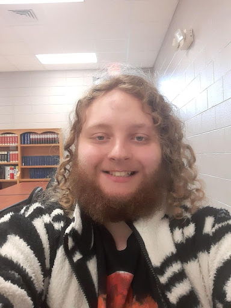

Hi I am a senior? Computer Science major here at UNC Charlotte. I am concentrating in Software Engineering.
- Personal Background: I am 21 years old, I am from the western part of the state and I like playing video games, reading fanfiction, and exploring/hiking.
- Professional Background: I currently work at the Headquarters for Ingles Markets Inc. I have worked there since I was 16 and currently haul freight inside the warehouse below corporate in the freezer and perishable departments. When I graduate I am hoping to get a decent desk job in corporate.
- Academic Background: I am a senior here at UNC Charlotte and transferred here after completing my Associate in Engineering in my early college. I went to high school in McDowell County and graduated Valedictorian.
- Background in Subject: I started coding robots for competition in middle school and took 3 coding classes in high school. It felt easy so I went into Comp Sci.
- Primary Work Computer: Alienware laptop, Windows 11, On me at all times
- Secondary Work Computer: Hewlett-Packard ProDesk Desktop, Linux Mint Cinnamon, On my desk in my dorm
- Courses:
- ITSC4155 - Software Development Projects: Capstone & Required
- ITIS4166 - Network-based Application Development: Looked fun and feels useful
- ITIS3310 - Software Architecture & Design: Required
- ITIS3135 - Front-End Web App Development: Had to retake, this class looks a lot more educational than the other one so I have High Hopes™
- ITIS4180 - Mobile Application Development: Expanding my skillset to mobile devices
- Funny/ Interesting item to remember me by: The kuyk in my last name is pronounced with an R
- I’d also like to share: I was born in Asheville and have lived there my entire life & I have never been out of the south except for the Bahamas.
"Propaganda isn't meant to make you believe the lies, it's meant to make discerning the truth so much effort that people stop trying."Silent East